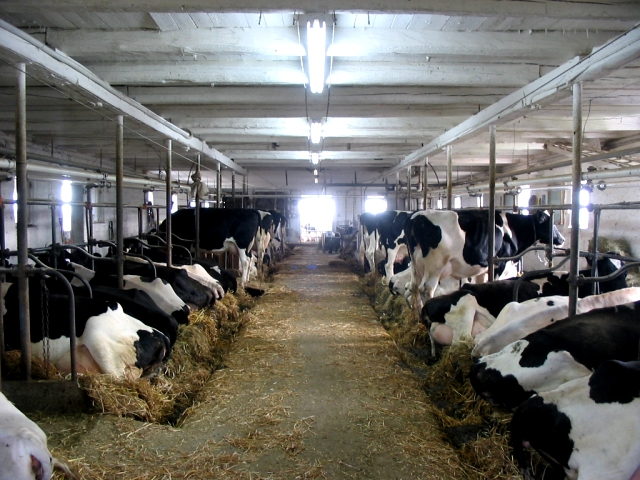
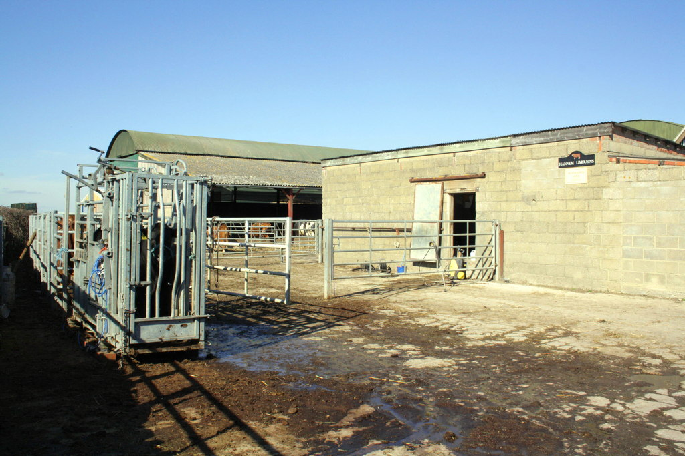
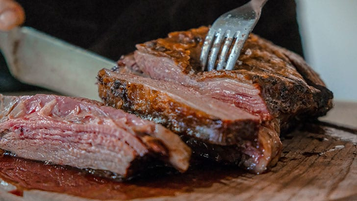

Factory Farming:
Factory farming is a prevalent modern issue. Each year, almost 10 billion animals are killed, and 99% of these are raised on factory farms. This issue is not only a moral one, but one that affects product quality as well as posing potential harm to human health. The effects of this method of farming are both physical and emotional on these animals. This in turn affects product quality, which will be explained below.

Stress on Animals:
The effects of confinement on livestock cannot be understated. In fact, according to, “Effects of Pre-Slaughter Stress on Meat Characteristics and Consumer Experience”, (Bruno I. Cappellozza and Rodrigo S. Marques), “Stressful situations are often faced by ruminants during their entire productive lives, from birth until slaughter. These situations predispose animals to health and performance losses which, ultimately might impact carcass quality and customer eating experience.”
Confinement impacts meat quality. This can affect customer satisfaction.
Meat quality can cause potential revenue loss. Companies could be more profitable via other methods
Meat quality can cause potential revenue loss. Companies could be mbackgroundore profitable via other methods
Low production rates
Stress Before Slaughter:
Shortly before the final slaughter of livestock, an animal experiences heightened stress. This has adverse effects on not only the animal, but also the consumer. In fact (P.G van der Wal, B Engel, H.G.M Reimert) , “Stress resulted in lower pH values and higher temperatures in the semimembranosus (SM) and the longissimus lumborum (LL) muscles and a higher rigor mortis value of the SM, at 45 min post mortem.” This would indicate processing stressors having negative effects on meat quality.

Increase meat keep time
Increase meat quality
Fewer health issues among livestock

 Home
Home